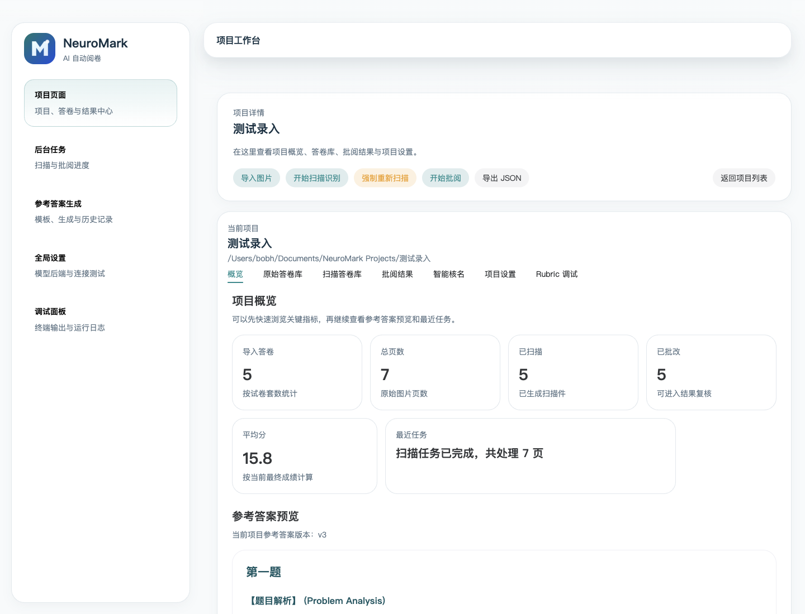
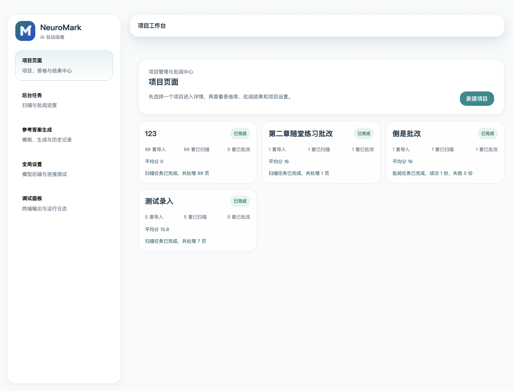
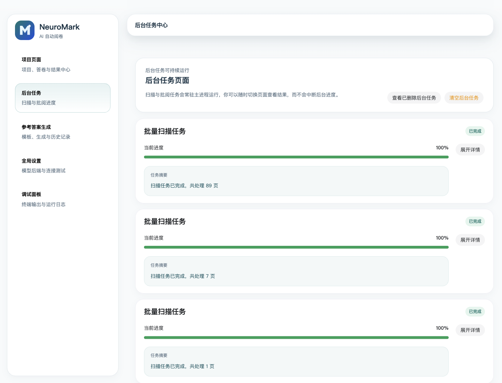
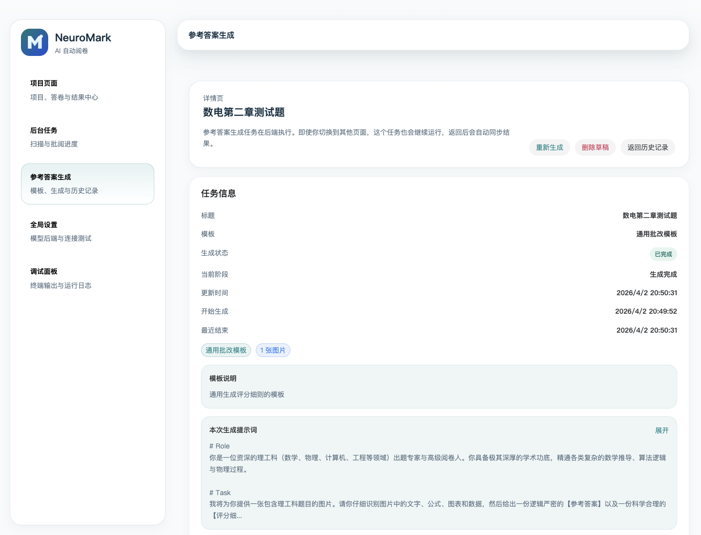

本地优先归档
项目数据、答卷图片、参考答案和导出结果落在本地目录，SQLite 管理状态，适合长期归档和二次处理。
真实阅卷需要的不只是答案，还需要项目目录、扫描件、评分标准、任务状态、人工复核、导出和后续追踪。 NeuroMark 关注的是这条链路里的每一个接缝。
项目数据、答卷图片、参考答案和导出结果落在本地目录，SQLite 管理状态，适合长期归档和二次处理。
C++/OpenCV 模块处理文档检测、透视矫正、调试预览和后处理，让手机拍照或扫描件更可用。
基于题目图片和提示词模板生成 Markdown 参考答案与评分细则，批阅时再转成结构化评分依据。
扫描、参考答案生成、批阅和 PDF 导出都以后台任务运行，切换页面不打断长流程。
在同一工作台查看原卷、扫描件、题目框、模型评分、问题点和答题提醒，并可手动修正分数。
给定班级花名册，一键与试卷信息智能对应。
支持成绩 Excel、小题正确率 Excel、JSON 和批量 PDF 导出，批阅结果可以继续进入教学分析流程。
可配置兼容 OpenAI API 的模型后端、模型名、超时、温度与推理强度，方便接入不同服务。
页面不追求把教师变成运维，也不把模型包装成黑箱。你能看到项目、任务、答案、扫描件和每一题的判断依据。




NeuroMark 把阅卷拆成清晰阶段：每一步都能被查看、调整和重新执行，适合教学现场的反复确认。
导入图片或 PDF，为每份试卷建立项目记录。
检测答卷边界，裁切、拉平并生成扫描件。
编辑或生成参考答案与评分细则。
按项目并发设置调用模型，缓存结构化结果。
逐题修改分数，结合名册校对学生身份。
导出 Excel、JSON 和 PDF，进入归档或分析流程。
国内用户可以使用 ghproxy 加速 GitHub Release 下载；如果加速服务不可用，随时切回官方 GitHub 直连。
如果你关心 OCR、文档扫描、评分系统、教育工作流的实践， NeuroMark 都欢迎真实反馈、问题复现和代码贡献。